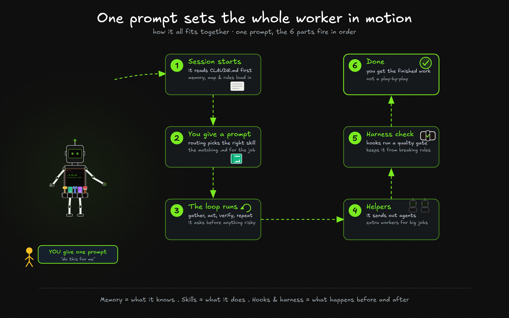
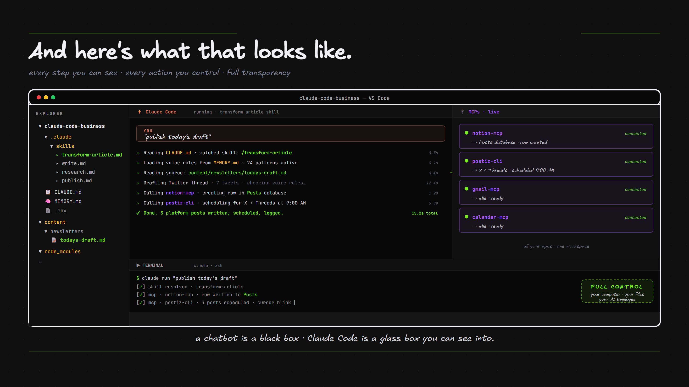
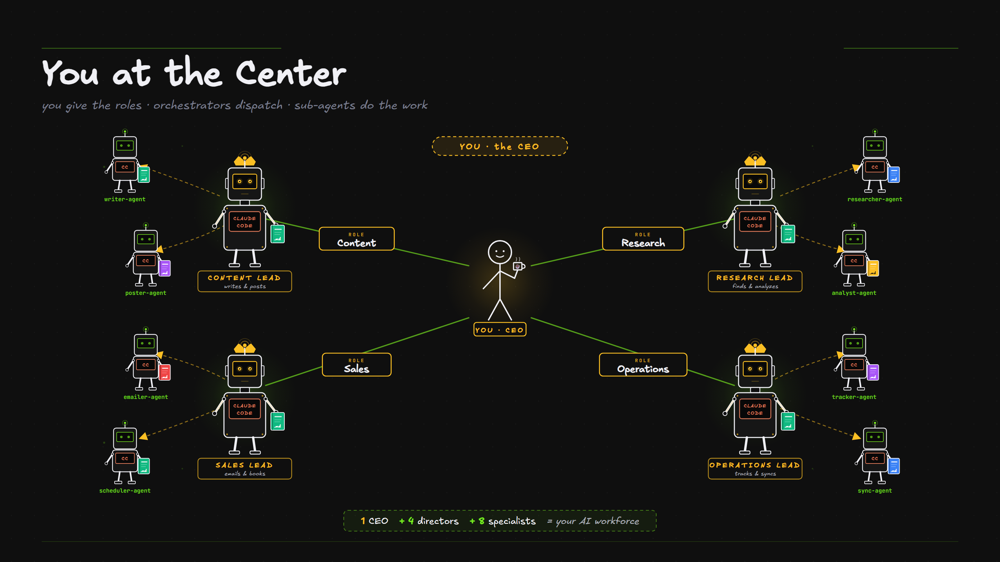

You've met every part. This module shows them working together. One prompt sets the whole worker in motion, then the habits that make it dramatically better.
What it is. One prompt fires every part in order. Session starts and it reads your CLAUDE.md, you prompt and routing picks the skill, the loop runs gather, act, verify while asking permission, helpers run if the job needs them, the harness and hooks check the work, done.

The one-liner to hold onto. Memory is what it knows, Skills are what it does, Hooks and the harness are what happens before and after.
What it is. A concrete trace. You type one sentence, write a welcome email for new subscribers, and you watch the parts fire one after another.

One sentence in, several building blocks fire. And because you wrote all the files, the map, the skill, the voice file, the hook, it all works your way.
What it is. Growth here isn't a longer to-do list, it's more employees. You map the next bottleneck and build the next worker, and each one gets taken up the same ladder. You give the roles, the orchestrators dispatch the work, the sub-agents do the work.

One CEO, four directors, eight specialists. That's a workforce, and you're the one at the top of it.
The whole worker at a glance, then the three habits that make it dramatically better.
| Part | What it does | Lives in |
|---|---|---|
| 🧠 Memory | What it knows about your business | CLAUDE.md · MEMORY.md |
| 🗺️ Routing | Which skill to use, where things live | CLAUDE.md |
| 🛠️ Skills | Tasks it does the same way every time | .claude/skills/ |
| 🪢 Harness | Automatic checks that keep it reliable | scripts + reviewers |
| 📡 Connections | Reaches your tools (Notion, Gmail…) | .mcp.json |
| 🤖 Agents | Helpers that work on their own | .claude/agents/ |
| ⚡ Hooks | Automatic reactions to events | .claude/ settings |
| 🔔 Commands | One-word shortcuts & schedules | /your-skill |
The single highest-leverage habit. "Write the report" is vague; "write the report, then re-read it against these 3 rules and fix anything that fails" gives it a target to verify against. It performs dramatically better when it can grade itself.
For anything bigger than a one-liner, let it look around and propose a plan before it acts. (In the editor, Shift+Tab toggles read-only "plan" mode.) You approve the plan, then it executes.
"Fix the login bug" wanders. "Checkout breaks for expired cards — check the payments folder, write a failing test first, then fix it" lands. A minute of specifics saves three rounds of correction.
Now build your first one. The Roadmap walks you through it, one step at a time.
Open the AI Employee Roadmap →